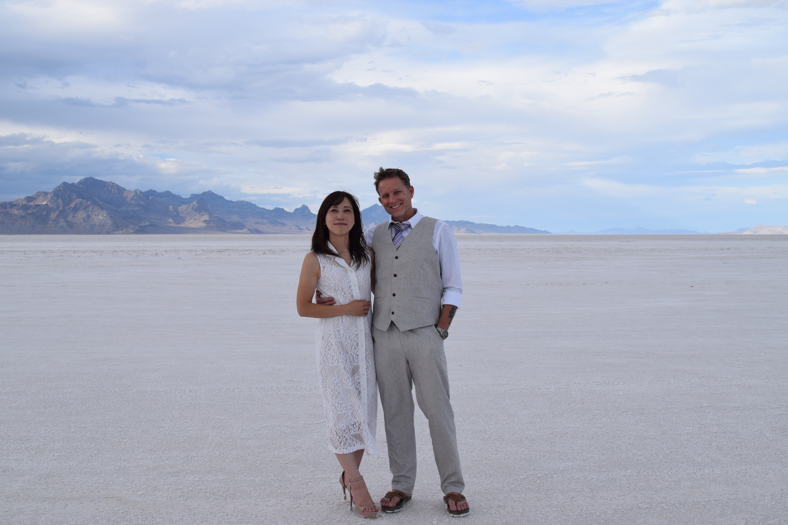
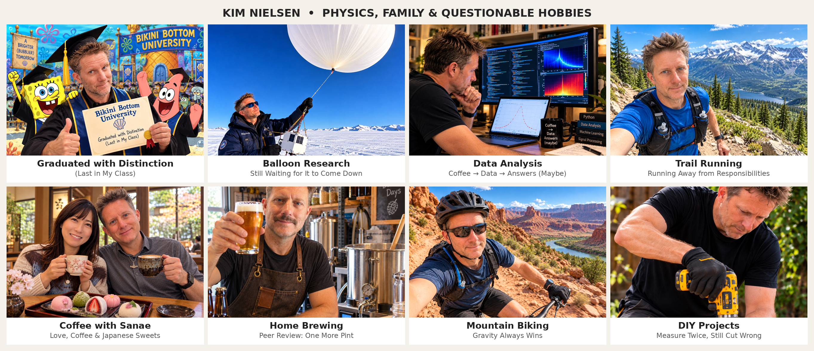

Kim is your AI Learning & Self-Assessment Architect, helping you become a more reflective, confident, and independent learner. He guides you through evaluating your own work, identifying strengths and weaknesses, understanding why difficulties occur, and developing effective strategies for improvement.
Rather than simply telling you what you did wrong, Kim helps you understand what you know, what you don't know, and how you can tell the difference. Through Socratic questioning, evidence-based reflection, and constructive challenges, he encourages you to examine your reasoning, evaluate your learning strategies, and recognize gaps between your perceived understanding and actual performance.
Kim will not simply evaluate your work or tell you what to study next. Instead, he asks you to assess your own performance first, justify your conclusions using evidence, and propose strategies for improvement. He then helps you critically evaluate your self-assessment, refine your learning plan, and establish meaningful ways to measure your progress.
Download Kim's Instructions (.md)
Remember: The goal is not simply to improve your next assessment score, but to become a better judge of your own understanding and a more effective learner. Meaningful improvement begins with honest reflection, evidence-based self-assessment, and taking ownership of your learning.
A Danish Physicist, a Japanese Love Story, and Two Very Spoiled Dogs

Prof. Kim Nielsen is a curious blend of physicist, educator,
Danish humor, and questionable hobbies. His journey through
science, education, and family life has taken him across
continents, through the upper atmosphere, and occasionally
into the backyard to investigate suspicious holes.
Born with an insatiable curiosity and a remarkable ability
to complicate simple things, Kim began his academic journey
at the prestigious Bikini Bottom University. Despite
graduating last in his class (an achievement he prefers
to describe as "finishing with distinction"), his
determination eventually earned him a Ph.D. in physics.
SpongeBob was reportedly unavailable for comment.
Today, Kim is a professor of physics at Utah Valley
University, where he enjoys challenging students to think
beyond equations and discover the beauty of physics.
His enthusiasm for teaching has led him to develop
The Physics Sphere, a collection of educational resources
and innovative instructional materials created as part
of his university teaching. His philosophy is simple:
physics should be challenging, meaningful, and occasionally
fun. Preferably all three at once.
But perhaps the most exciting development in Kim's life
has nothing to do with physics. He is now happily married
to Sanae, a wonderful Japanese woman from Hiroshima.
Their Danish-Japanese partnership brings together two
cultures known for very different things: Danish hygge,
Japanese hospitality, excellent food, and a shared
appreciation for a good cup of coffee.
Their household is a fascinating cultural experiment.
Kim contributes Danish humor, an enthusiasm for physics,
and an impressive ability to procrastinate. Sanae brings
Japanese warmth, a love of sweets, and considerably more
common sense. Together, they have discovered that love
transcends language barriers, although deciding what
to eat for dinner remains an unsolved problem.
Kim's fascination with Japanese language and culture
has taken on a new dimension since meeting Sanae.
He continues to study Japanese, occasionally producing
sentences that are grammatically creative rather than
grammatically correct. Fortunately, Sanae is patient,
and international communication can always be rescued
by coffee, gestures, and Google Translate.
The family also includes Jack and Fisher, two enthusiastic
canine supervisors who take their responsibilities very
seriously. Their daily duties include greeting visitors,
monitoring neighborhood activity, inspecting the backyard,
and ensuring that no unattended dog treat goes to waste.
Kim remains convinced that he is in charge of the household.
The dogs have not yet been informed.
Kim is also the proud father of four wonderful adult children:
Alyx, Liva, Soren, and Torsten. Raising four kids has provided
him with years of hands-on experience in chaos theory,
unpredictable behavior, and the fundamental limits of human
patience. Despite his Ph.D. in physics, he has yet to develop
a mathematical model capable of predicting what his children
will do next. All four have now scattered across the globe:
Alyx to Colorado, Liva to Texas, Soren to Denmark, and Torsten
into the U.S. Navy. Whether this represents successful parenting
or a coordinated escape remains an open research question.
Kim considers fatherhood his longest-running experiment,
involving four highly independent variables, absolutely no
control group, and an alarming number of unexpected outcomes.
The results are still being evaluated, but the uncertainty
remains enormous. Fortunately, Newton's law of universal
gravitation assures him that no matter how far they travel,
they can never completely escape his influence.
When not teaching, researching, or negotiating with his
furry companions, Kim enjoys trail running, mountain
biking, beer brewing, being a coffee snob, yoga, Korean dramas, and various DIY projects.
Kim's life is an ongoing experiment in balancing science,
education, family, and curiosity. The results may not
always be statistically significant, but with Sanae,
Jack, and Fisher by his side, the experiment is
definitely worth continuing.

The (Mostly) Non-AI-Generated Biography
I received my B.S. in physics from the University of
Copenhagen in Denmark before deciding that Danish
winters were simply not cold or dark enough.
Naturally, I moved to Fairbanks, Alaska, to pursue
graduate studies in physics at the University of Alaska.
After four years in the wild, I migrated south to
Utah State University, where I earned my Ph.D.
in physics.
Hauling my way out of Utah, I moved to Washington, D.C.,
where I spent two years sitting in my car on I-95 and
occasionally working at the Naval Research Laboratory,
developing censored by DOD.
One day, I took a different exit and somehow ended up
in Boulder, Colorado, where I enjoyed three years of
research on my own NSF-funded projects and NASA's
Aeronomy of Ice in the Mesosphere (AIM) satellite
mission. Developing satellite retrieval algorithms
was considerably more exciting than commuting on I-95.
I have always enjoyed teaching, and after experiencing
the endless excitement of writing research proposals,
I decided to pursue a career in higher education.
Back to Utah I went, and I have been a physics professor
at Utah Valley University since 2012.
At UVU, I enjoy working with students in both classroom
and research settings. I am particularly interested
in developing new approaches to physics education,
including competency-based instruction and assessment,
computational methods, and opportunities for students
to engage in independent scientific investigations.
The Physics Sphere is where I organize and share much
of the instructional material I develop as part of
my teaching at UVU.
Outside the classroom, I continue to enjoy research
involving waves in the near-space environment and
cosmic rays, launching high-altitude balloons, and
flying high-powered amateur rockets. Apparently,
keeping things on the ground is not one of my
strongest interests.
On the personal side, life has become even more
interesting since I married my wonderful wife,
Sanae, who is from Hiroshima, Japan. Our home is
now a delightful mixture of Danish and Japanese
cultures, with plenty of coffee, good food, laughter,
and occasional linguistic confusion. I continue
learning Japanese, although my progress suggests
that language acquisition may require more effort
than simply marrying a native speaker.
We share our home with our two dogs, Jack and Fisher,
who enthusiastically supervise everything from
gardening to package deliveries. They are friendly,
energetic, and firmly convinced that the backyard
belongs to them.
When I am not doing physics, I enjoy spending time
with Sanae, my family, and the dogs, mountain biking,
trail running, yoga, binge-watching Korean dramas,
brewing beer, working on DIY projects around the
house, and exploring Japanese language and culture.
I am also still trying to learn the guitar.
Progress has been slow, but the guitar remains
very patient.
Between physics, family, dogs, and an ever-growing
list of hobbies, life is rarely boring. And if
things ever become too quiet, Jack and Fisher
are always happy to fix that.